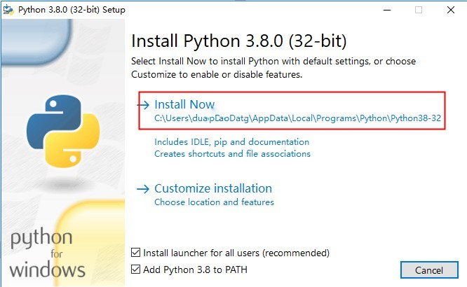
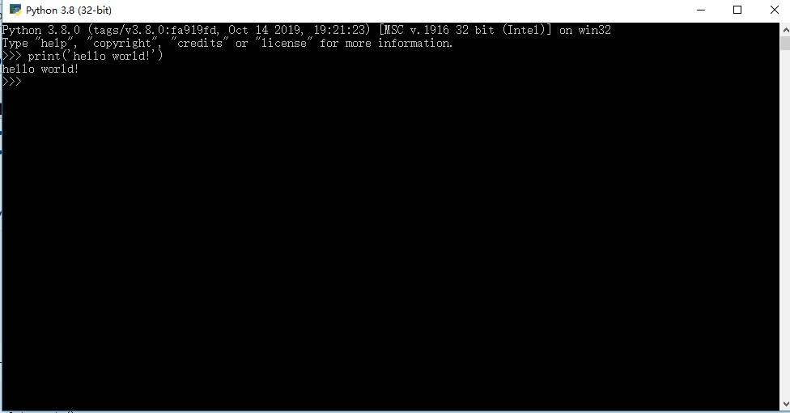

本文介绍下在windows系统下安装python和python环境搭建。
首先，我们去python的官方网站下载python安装包。官网地址：https://www.python.org/downloads/
跳转到官网后，我们点击下载按钮，如图：
在网页下方还可下载python的历史版本，我们下载最新版即可。
下载完成后，打开文件位置，双击开始安装。
我们运行安装程序后，会弹出如下界面：

在界面下方我们把两个选项都选中。
第1个选项是适用于Windows系统的python启动组件，安装这个，你可以通过它在Windows命令行界面切换python的不同版本，比如，输入：
py -2.7
接下来就会使用2.7版本的python来运行程序，对于多版本python的管理还是比较有用的。
第2个选项是自动配置环境变量，务必要选中，否则我们就不能在windows命令提示符窗口启动python交互环境了，会很麻烦。如果你不小心没有选中此项，要么重新安装python，或者手动给python所在路径添加到环境变量中。不懂的话可以去百度查找配置python环境变量的方法，这里我就不赘述了。
选中之后点击红框中的Install Now按钮，程序开始安装，安装完成后关闭安装窗口即可。
我们看下这一顿操作之后，我们的计算机多出哪些东西。
点击windows，在搜索框中搜索python，会显示出python相关的程序，如图：
可以看到，我们的计算机多了这4个程序。接下来我简单介绍下。
IDLE（python 3.8 32-bit）：
这是python自带的集成开发环境，我们可以在开发环境中运行python代码。如图：
Python 3.8（32-bit）：
这是Python以命令提示符形式与python解释器交互的工具，与IDLE几乎没有区别，区别仅是形式不同。

Python 3.8 Manuals（32-bit）：
这是当前版本python的说明文档，全是英文的。
Python 3.8 Module Docs（32-bit）：
这是python中所有模块的的说明文档，有非常详细的介绍，不过也都是英文。
python安装完成之后，python的标准库也已安装完成。不过标准库里都是python自带的模块，如果需要第三方模块的支持，我们就得去python官网下载注册过的第三方库。
不过，python为我们提供了pip这个快捷安装第三方模块的管理包，我们只需要简单的命令就能安装第三方模块。
每个第三方模块都有一个名称，比如，我们想安装numpy这个科学计算库，只需要 Windows+R，输入cmd回车，打开命令提示符窗口后输入pip install numpy回车，就可将numpy库下载到当前环境。如图：
如果你输入pip install numpy运行后报错，提示pip不存在之类的，则可能是你的python版本过低，或者安装程序时没有选择pip，可以选择高版本python或重新运行安装程序添加pip。
python环境搭建是python编程的基础，通过本文章你可以了解到Windows操作系统中配置python环境的方法。下一篇文章我将介绍下网络爬虫，然后使用python做一个小爬虫项目。
更多内容可访问我的博客：http://www.yunc.top